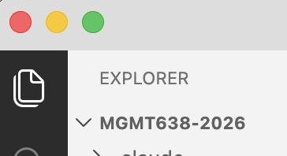
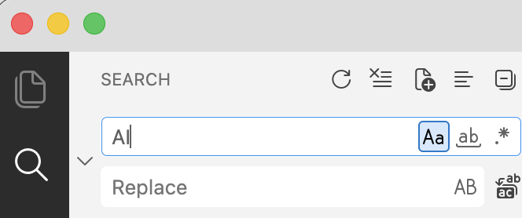
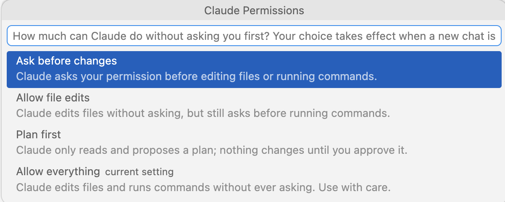

1
Academic Studio
2
The Command Line
3
CLAUDE.md and Skills
4
Claude as a Teaching Assistant
Reach the File Explorer tool from the left toolbar.
Files

Search

Claude icon on top right
Extensions in left toolbar
Remote SSH in left toolbar

| Command | What it does |
|---|---|
| /resume | a version of Claude/Conversations |
| /model | select from Fable, Opus (default), Sonnet, and Haiku |
| /clear | clear the context window (= new conversation) |
| /compact | summarize the conversation in a text file, launch a new conversation that reads the text file |
| Esc | escape key interrupts Claude, which then waits for new instructions |
File operations
Move, copy, rename, delete, search within.
Find all files in my Documents folder that discuss … and move them to …
Install and run software
Run a python script, build a LaTeX doc, …
Interact with external services
Command Line Interfaces (CLIs): gh for GitHub, aws for Amazon Web Services, … Also, use APIs.
pandoc — convert between Word, Markdown, HTML, PDFImageMagick — resize, crop, convert images in bulkffmpeg — trim video, transcode, pull the audio outripgrep — search thousands of files in secondscron — run a command on a scheduleGit is a version control system. A commit records the current state of a folder (repository=repo). Git is not AI. Git existed long before AI. But AI knows Git.
Tell Claude
Install Git. Commit this folder to Git.
Frequently, thereafter, tell Claude to commit changes.
At some point, you realize that you want to recover something from a version that was overwritten sometime in the past:
Tell Claude
Find a prior version of … that said … Add that to the current version.
Where Claude Looks
What It Is
You could get the same behavior by pasting the instructions in the prompt window
At Startup
At the start of each conversation, Claude also looks in specific places for SKILL.md files
Two Locations
It looks in your home directory (C:\users\yourname on Windows) and it looks in the project folder
Loaded on Demand
Skills are text files saved on your hard drive. Claude reads the top of each SKILL.md file on startup, and it reads the bulk of the file only when needed
Where to Find Them
Ask Claude
The xlsx, docx, and pptx skills are created by Anthropic and come pre-installed with Claude Desktop
I’ve looked at several skill repos for business/economics research. Most are not useful. Here are a couple I’ve adopted — by Lu Han, Bank of Canada.
Econ Writing: tells Claude to follow Cochrane’s Writing Tips for PhD Students and some other style guides
Econ Paper Review: writes a referee report on your paper
Give Claude the links and ask Claude to install them if you want to try them out.
1
Iterate
Usual process is you work on something, iterating until you get what you want.
2
Recognize
You realize you may want the same thing again, and you don’t want to go through the iteration again.
3
Save the Recipe
Solution: tell Claude to save the satisfactory method (recipe) as a skill. Can save your result along with the skill as an example to follow if useful.
Slash Command
/skillname at the prompt/planNatural Language
Automatic
1
Create
Tell Claude to create a skill for your folder named “pirate” with this content: “Always answer like a pirate”
2
Invoke
Start a new conversation. Enter /pirate What is the meaning of life?
3
Inspect
Ask Claude to show you the pirate SKILL.md
Claude is generally able to create slide decks using whatever style you like. Here is an example.
1
Save the Recipe
Once Claude has been successful at creating decks in your preferred style, ask Claude to save the recipe as a skill.
2
What Gets Saved
Claude will save images, layout guides, etc. from the doc you gave it along with the fonts that best match the doc (maybe not exact match) for reuse.
Partly, yes — and a good skill does not replace the template.
What the Template Already Does
Fonts, colors, layouts, placeholder positions, the scenery. A designed .pptx is already a style kit.
A good skill uses it — filling that template’s own layouts instead of drawing shapes.
What the Skill Adds
A template guides a person, who sees the result and adjusts. A skill guides Claude, which cannot.
In May, 2026, the Claude add-in for PowerPoint became generally available (for paid accounts). But I don’t think Rice has authorized it for our Microsoft 365 accounts.
The advantages would be (1) just one window open, (2) no save/close/reopen.
Save and close first
Include in your skill: Save and close any open PowerPoint deck before editing it. Re-open after editing.
Claude cannot see your slides
Claude cannot natively view PowerPoint slides to examine whether things are properly located. It goes PPTX → PDF → PNG.
The route matters
If left to its own devices, it may choose an inferior PPTX → PDF route (LibreOffice = open-source version of MS Office)
When Claude creates your skill, ask it about using AppleScript (Mac) or COM automation (Windows)
Sometimes multiple skills compete for the same job.
The collision
Anthropic’s pptx skill triggers on any PowerPoint file, so a skill of your own for your desired style will collide with it. Things compound if you create multiple skills for multiple styles.
The fix
Ask Claude to edit your CLAUDE.md to settle the precedence.
Tell Claude to install Git and to initialize your project folder as a Git repo and to commit. Make some changes, commit again, and ask about restoring the prior version.
Pick a deck you want to refresh. Ask Claude to read it and offer suggestions on content, organization, and style. Ask Claude to edit some slides and to draft some slides, saving changes in a new name.
Create a skill for Claude to write slides in your desired style. Inspect the skill (if global, it is in $HOME/.claude/skills; if local, it is in your project folder .claude/skills)
Claude can work alongside you on whatever you’re working on. Get advice and suggestions. Hand over the tedious part of the work. Save good workflows as skills so they can be easily repeated.